Introduction
Introduction
Statistics for CSAI II
Travis J. Wiltshire, Ph.D.
Outline
What we will cover today:
- Course Expectations
- R, Rstudio
- Probability Basics

About Me
- B.S. in Psychology, University of Central Florida, USA
- M.S. in Human Factors & Systems, Embry-Riddle Aeronautical University, USA
- PGC in Cognitive Science, University of Central Florida, USA
- Ph.D. in Modeling & Simulation, University of Central Florida, USA
- Postdoctoral Fellowship, Quantitative Psychology and Dynamical Systems, University of Utah, USA
- Postdoctoral Fellow, Carlsberg Foundation, Department of Language and Communication, SDU, DK

About me
Dr. Steve M. Fiore:
|
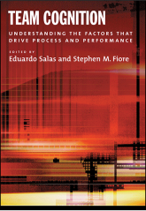
Dr. Jonathan Butner
| 
Research interests
- Research Interests:
- Team cognition and dynamics
- Collaboration
- Interpersonal coordination
- Social cognition and interaction
- Complex systems
- Quantitative methods and statistical modeling
- Learning and training science
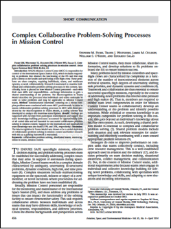
|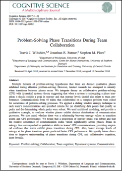
| 
Personal interests
- Personal interests:
- Music
- Outdoors/Photos
- Culture and travel
 |
|
|
|
Dr. Silvy Collin
- BSc in Biology (Radboud Univ. Nijmegen)
- MSc in Medical Biology / Neurobiology (Radboud Univ. Nijmegen)
- PhD in Cognitive Neuroscience/Neuroimaging (Donders Institute)
- Postdoctoral researcher in Cognitive Neuroscience at Princeton University
- Assistant Professor at TiU since August 2020
Research: Already in my BSc I had an interest in both biology and psychology. Cognitive Neuroscience/neuroimaging has both of these represented which is why I chose that field. I study memory, and in particular episodic memory, using cognitive tasks and functional MRI. I find it intriguing to discover how people remember the world around them and their experiences, and how they learn from it.
Personal: In my spare time I enjoy reading, pretty much anything from detectives to romance to sci-fi, and I like to bake, cakes, cookies, etc :)
Course Expectations
Course Expectations
- Read the Syllabus!
- Follow the course schedule.
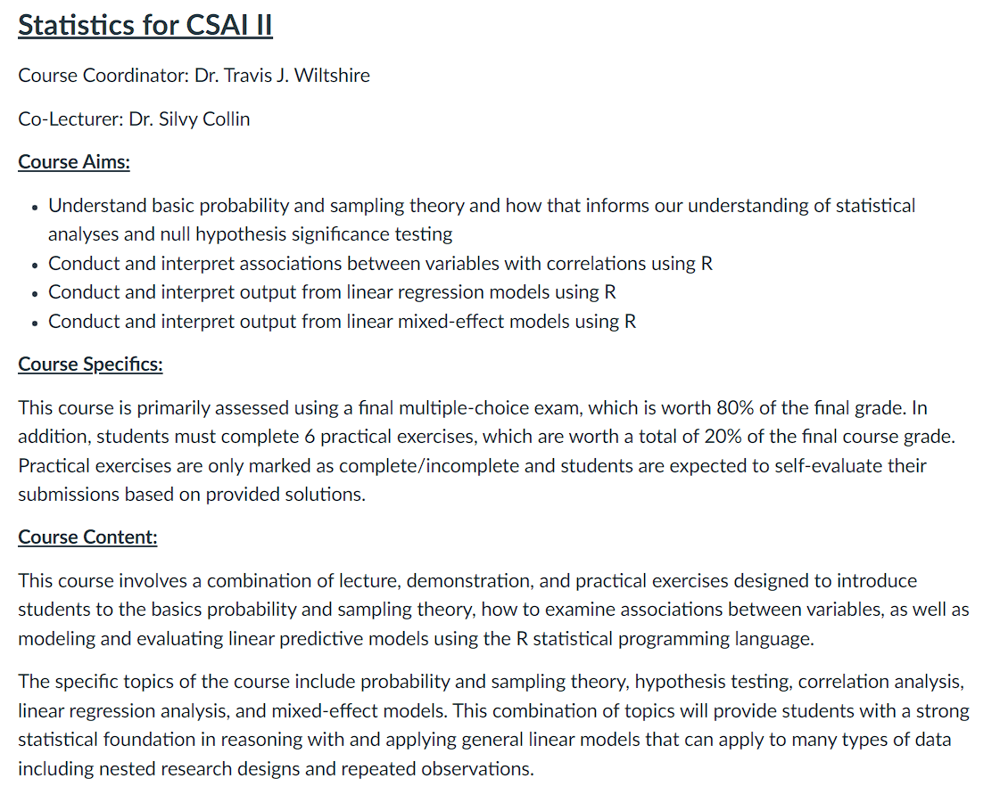
Course Expectations
- 6 EC course:
- 29 hours per EC
| Total hours for course | 168 |
|---|---|
| Time in Lecture | 21 |
| Time in Practical Sessions | 10 |
| Time for reading | 45 |
| Time for practicing in R | 40 |
| Time for Completing Practical Assignments | 22 |
| Time to prepare for Exams | 30 |
How to spend your time
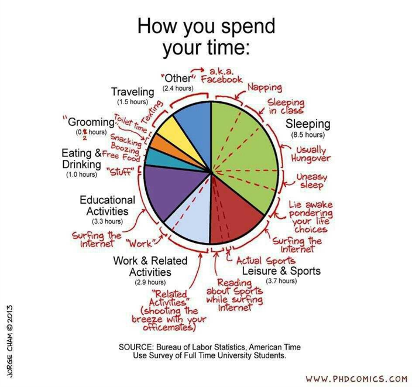
How to get the most from this course (and be good at statistics in the future):
- To get the most out of this course, I recommend for each
topic/module you:
- Read the Required Text
- Complete Swirl/LearnR Tutorials
- Complete Pre-Class Quizzes
- Attend/Watch Lectures
- Engage in in Class Exercises
- Check your Understanding (Reread if necessary, post questions on Canvas)
- Complete Required Practical Exercises
- Evaluate Practical Exercise Solutions (Post questions on Canvas, ask Questions in Practical Sessions)
- (Optional) Complete Associated Open Stats Lab)
- Dunlosky, J., Rawson, K. A., Marsh, E. J., Nathan, M. J., & Willingham, D. T. (2013). Improving students’ learning with effective learning techniques: Promising directions from cognitive and educational psychology. Psychological Science in the Public Interest, 14(1), 4-58.
Course Expectations
- Our Textbook is free!
- Download it from here: https://compcogscisydney.org/learning-statistics-with-r/
- Other reading materials are uploaded on Canvas.
Required readings must be completed before class on the date listed in the schedule!

Practical Exercises
- 6 exercises on Canvas and self-evaluated
- Must be submitted on Canvas
- Will be checked for completeness/valid attempt by our student assistants
- No resubmission or resits
- Discussed during practical sessions
- Practical Sessions (more details soon)
Course Learning Objectives
- Understand basic probability and sampling theory and how that informs our understanding of statistical analyses and null hypothesis significance testing
- Conduct and interpret associations between variables with correlations using R
- Conduct and interpret output from linear regression models using R
- Conduct and interpret output from linear mixed-effect models using R
Course expectations
- Course meeting time/location: See My Timetable, location and time can vary.
- Practical Session: Typically on Fridays.

Course Expectations
- Canvas
- All course information and materials will be posted here
- Submitting Practical Exercises
- Your grades from exams will be posted here first (These are unofficial)
- Questions should be primarily through practical sessions or in class, but can be posted on Canvas.
Course Expectations
- Exams (80% of your grade)
- Final – 80%
- Multiple choice*
- Date and times for exams and resits will be posted in your time table
- You must make sure to register for the exams!
- Practical Exercises (20% of your grade)
- 6 assignments submitted through Canvas
- Deadlines are listed in syllabus and will be in the assignments section of Canvas
- No extensions
- Will be checked for completeness by our student assistants
- Recommended Exercises (in LearnR)
- Listed in schedule
Course Expectations
- Preferred question time is during the practical sessions.
- Questions about statistical theory or analyses:
- Check the syllabus, the required readings, or in the lecture slides.
- Questions about R Programming:
- Can’t help much when your R code/script does not work.
- Use Google, GitHub, StackOverflow, and the built-in help functions to figure out your code.
- Form peer groups to learn from each other and check each other’s code.
- Questions during Class:
- I encourage questions in class. Before, after, during practical sessions
Semester Plan
Semester Plan is in Canvas
R, R studio
Make sure R, R studio, and Swirl are working on your computers!
Go here and follow the directions:
- https://swirlstats.com/students.html (Do we still use swirl?)
Complete the required reading!

Where are we going in this course?
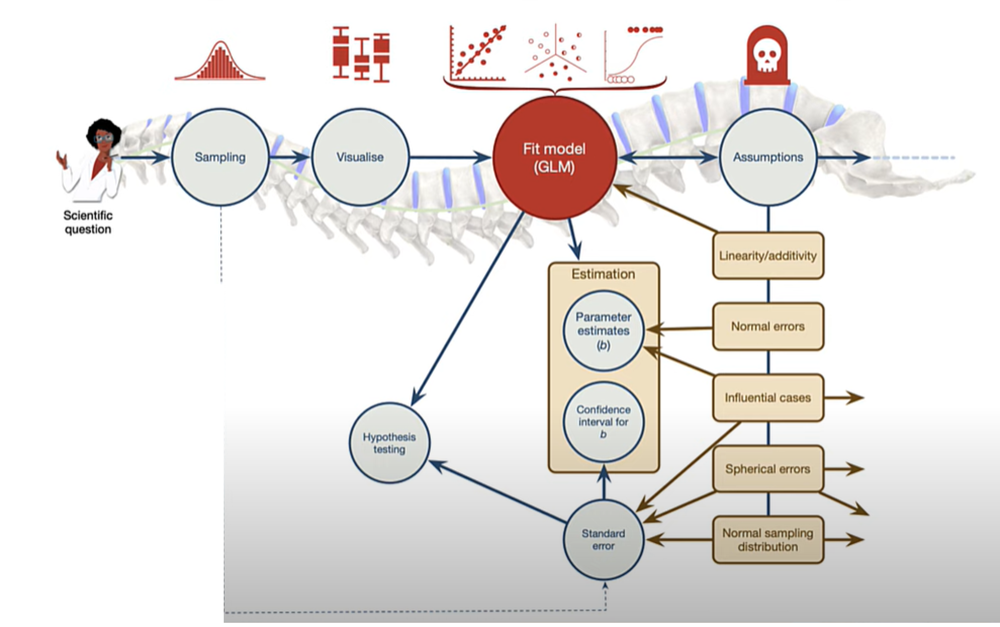
Questions?
Asking questions in encouraged
Quiz
What do you remember from stats I?
Question 1
Results
1. If I measure your knowledge of statistics before and at the end of the course, and I wan’t to see if you improved, what would be an appropriate test to make this comparison?
Question 2
Results
2. What is the common goal of doing empirical work utilizing statistics in CSAI?
Probability Basics
Taco Literacy
- What if I told you a recent survey of 1000 Europeans showed that 72%
of people were taco illiterate?
- 720 out of 1000 did not understand the important anatomical components and historical lineage of tacos.
- Would you expect 72% if you were to sample 10,000 Europeans?
- What if we found the number went down to 43%?
- https://tacoliteracy.com/

Why do we need probability theory?
- We use inferential statistics to answer questions about how representative our data are of the population
- The core of the science
- Probabilities form the basis for statistical inference.
Probability vs Statistics

Frequentist vs Bayesian view
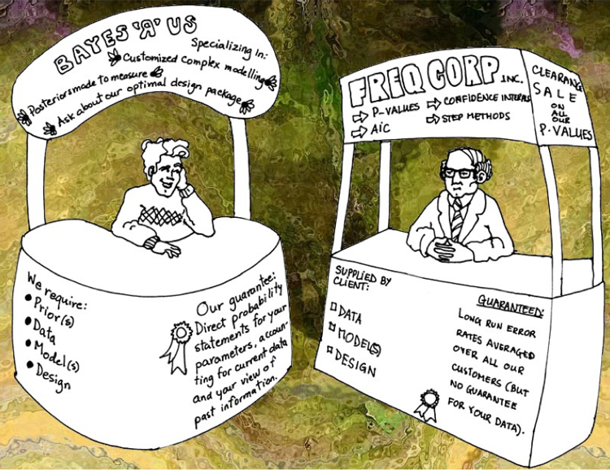
Probability Distributions
Elementary events – For a given observation, the outcome will be one and only one of these events.
Sample space – the set of total possible events
P(X) = 0-1
Sum of all probabilities is 1
Non elementary events
- E.g. wearing jeans
- P(E)= P(X1)+ P(X2)+ P(X3)

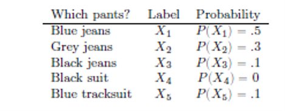
Binomial distribution
- Based on \(\theta\) success
probability
- E.g., number of successful tails in a coin flip, number during a dice roll
- N = number of observations or size parameter
- X is generated randomly from the distribution
\[P(X|\theta,N)\]
\[X \sim Bionomial(\theta,N)\]

Binomial Distribution in R
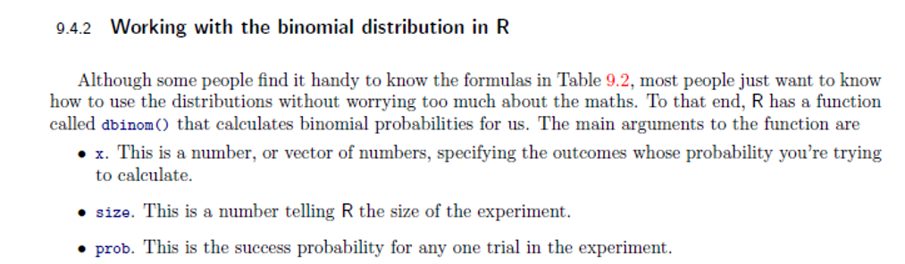
dbinom(x=4,size=20, prob=1/6)## [1] 0.2022036| What it does | Prefix | Normal distribution | Binomial distribution |
|---|---|---|---|
| probability(density) of | d | dnorm() |
dbinom() |
| cumulative probability of | p | pnorm() |
pbinom() |
| generate random number from | r | rnorm() |
rbinom() |
| quantile of | q | qnorm() |
qbinom() |
Visualize the binomial distribution:
dbinom(x=4,size=20, prob=1/6)#run the code
x <- seq(0,50,by=1) #Generate a series of values 0-50
y <- dbinom(x,50,prob=1/2)
plot(x,y, type='h', col='blue')Give it a try:
If I request 50 tacos from a restaurant that serves both hard shell and soft shell tacos, what is the probability that 25 of them are soft shell?
I want to have a pizza party and order 20 pizzas. Pizzas can either have meat on them or not meat. What is the probability that 6 of the pizzas are vegetarian friendly?
I spend too much time trying to pick a movie to watch on Netflix so I create a program to choose something for me at random. I only allow my program to choose the following genres: comedy, action, sci-fi, drama, or thriller. If I watch 50 movies using my program, what is the probability that I watch 17 comedies?
Exercise 1:
- If I request 50 tacos from a restaurant that serves both hard shell and soft shell tacos, what is the probability that 25 of them are soft shell?
y <- dbinom(x=25,size=50,prob=1/2)
print(y)Exercise 2:
- I want to have a pizza party and order 20 pizzas. Pizzas can either have meat on them or not meat. What is the probability that 6 of the pizzas are vegetarian friendly?
x <- seq(0,20,by=1) #Generate a series of values 0-20
y <- dbinom(x,20,prob=1/2)
plot(x,y, type='h', col='blue')
y<-dbinom(x=6,size=20,prob=1/2)
print(y)Exercise 3:
- I spend too much time trying to pick a movie to watch on Netflix so I create a program to choose something for me at random. I only allow my program to choose the following genres: comedy, action, sci-fi, drama, or thriller. If I watch 50 movies using my program, what is the probability that I watch 17 comedies?
x <- seq(0,50,by=1) #Generate a series of values of 0-50
y <- dbinom(x,50,prob=1/5)
plot(x,y, type='h', col='blue')
y<- dbinom(x=17,size=50,prob=1/5)
print(y)Normal distribution
- Most important in statistics!
- Called Bell Curve of Gaussian distribution
- Continuous distribution vs discrete case for binomial
\[X \sim Normal(\mu, \sigma)\]

Normal distribution
\(X \sim Normal(\mu, \sigma)\)
- What happens when we change, the mean or the SD of a normal distribution?
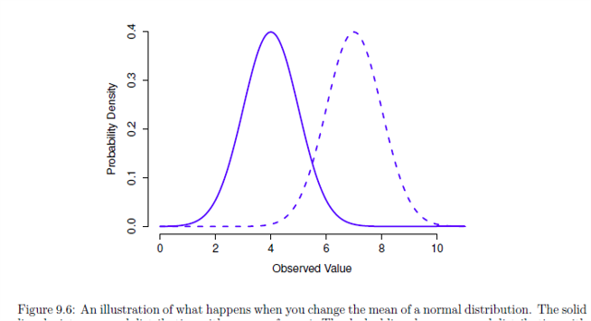
|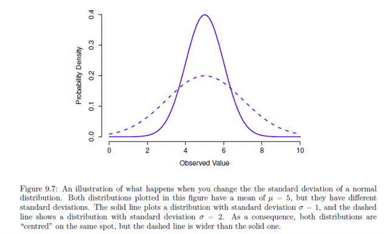
Normal distribution
- Area under the curve must equal 1
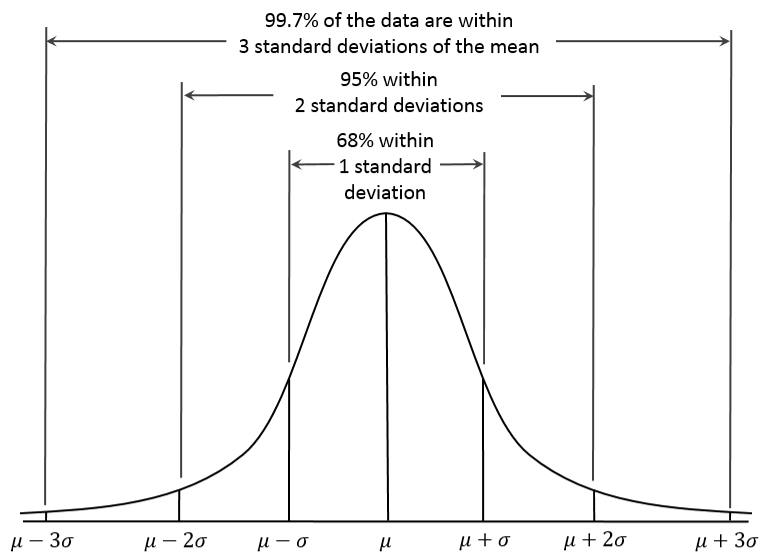
t distribution
- Similar to normal
- Heavy tails
- Used in t-tests, regression, and more
- Used when you expect data are normally distributed, but don’t know mean or SD
- R code:
dt(),pt(),qt(),rt()
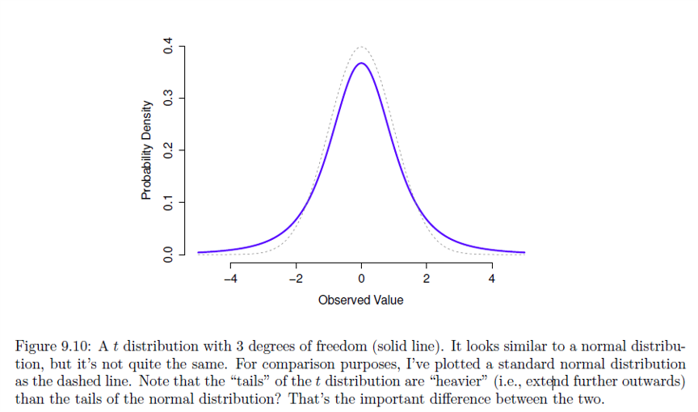
Chi-squared distribution
\(\chi^2\)
- Often used in categorical data analysis
- Shows up everywhere
- ‘Sum of squares’ follow this distribution
- R code:
dchisq(),pchisq (),qchisq (),rchisq ()
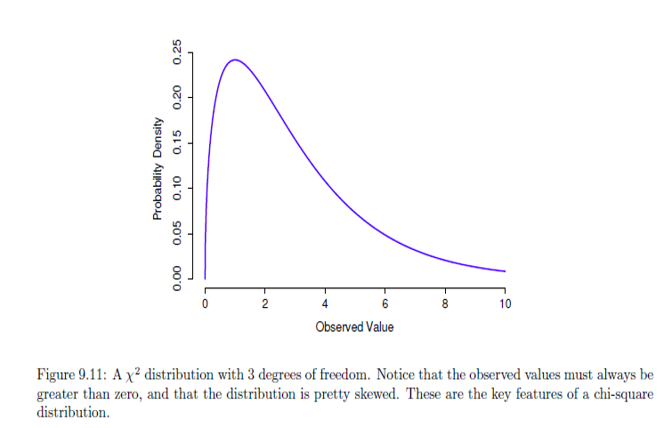
F distribution
- When you need to compare two chi-square distributions
- Comparing two sums of squares
- R code:
df(),pf(),qf(),rf()

Exercises
Questions (use R below if you need it)
- What is the probability of drawing the queen of hearts from a deck of cards?
- What is the probability that I will draw a card with a black figure on it?
- If I draw 30 cards from the deck and replace each card afterward, what is the probability that I will draw the jack of spades 5 times?

# Your code herequeen<-dbinom(x=1,size=1,prob=1/52)
blck<-dbinom(x=1,size=1,prob=1/2)
jack<-dbinom(x=5,size=30,prob=1/52)Exercise: Use R
- Generate 1000 random numbers that follow a normal distribution with
a mean of 5 and a sd of 2.
- Plot the histogram of these values
- What is the cumulative probability of me getting 25 soft shell tacos
when I order 50 tacos from a restaurant that serves both hard shell and
soft shell tacos?
- What does this number mean?
- Make a plot of this distribution
- Check out the following links:
Generate 1000 random numbers with a mean of 5 and an sd of 2 and plot a histogram of these values.
# Your code herex<-rnorm(n=1000,mean=5,sd=2)
hist(x)Find the cumulative probability of getting 25 soft tacos when I order 50 (hard or soft only) and plot the distribution.
# Your code heresfttac<-pbinom(q=25,size=50,prob=1/2)
print(sfttac)Conclusion
Preparing for Module 2
- Complete Module 1 readings, tutorials
- Complete Module 2 readings (CH 10 (Navarro)) and Tutorials
Thanks!
See you next week! Questions?